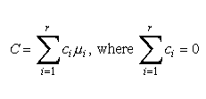
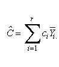
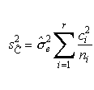
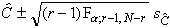
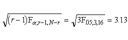
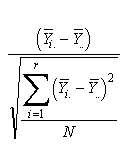

7.4. Comparisons based on data from more than two processes
7.4.6. How can we make multiple comparisons?
7.4.6.2. |
Scheffe's method |
Scheffe method example
Whenever the ANOVA rejects the null hypothesis, the Scheffe method
will find at least one significant contrast
Normalized contrasts and the maximum normalized contrast
Comparing Tukey's and Scheffe's methods

As was described earlier, we estimate C by:



are correct simultaneously.
We wish to estimate, in our previous experiment, the following contrasts

and construct 95 percent confidence intervals for them..
The point estimates are:

Applying the formulas above we obtain in both cases:


For a confidence coefficient of 95 percent and degrees of freedom in the numerator of r - 1 = 4 - 1 = 3, and in the denominator of 20 - 4 = 16, we have:

The desired simultaneous 95 percent confidence intervals are
-2.108 £ C1
£
1.108
-1.268 £ C1
£
1.948
Notice that when we constructed a confidence interval for a single contrast we found the 95 percent confidence interval:
-1.594 £ C £ 0.594
As expected, the Scheffé confidence interval procedure that generates simultaneous intervals for all contrasts is considerable wider.
Some Special Properties of the Scheffé Method
If the null hypothesis of equal treatment level means is rejected during an ANOVA, the corresponding Scheffé multiple comparison procedure will find at least one contrast (out of all possible contrasts) that is significant. In other words, at least one contrast has a confidence interval that does not include zero. It may be, though, that this contrast is not of the greatest interest to the analyst.
As stated before, there are an infinite number of contrasts, and the vast majority are of no practical value to the analyst.
We can define, however, one maximum normalized contrast. By normalized we mean: the observed value of the contrast divided by its standard error.
The contrast coefficients for the maximum normalized contrast are given by the following expression:

The resulting normalized contrast has value 5.401.
As we said before, this particular contrast may not be of great value to the analyst. However, the analyst has a guide for the importance of any contrast of interest by observing how close the estimate of that contrast is with respect to the maximum contrast.
Comparison of Scheffé's Method with Tukey's Method.
If only pairwise comparisons are to be made, the Tukey method will result in narrower confidence limit, which is preferable.
Consider for example the comparison between µ3 and µ1. The resulting confidence intervals are:
Tukey 1.13 < µ3-µ1
<
5.31
Scheffé 0.95 < µ3-µ1
< 5.49
which gives Tukey's method the edge.
The normalized contrast, using sums, for the Scheffé method is 4.413, which is close to the maximum contrast.
In the general case when many or all contrasts might be of interest,
the Scheffé method tends to give narrower confidence limits and
is therefore the preferred method.